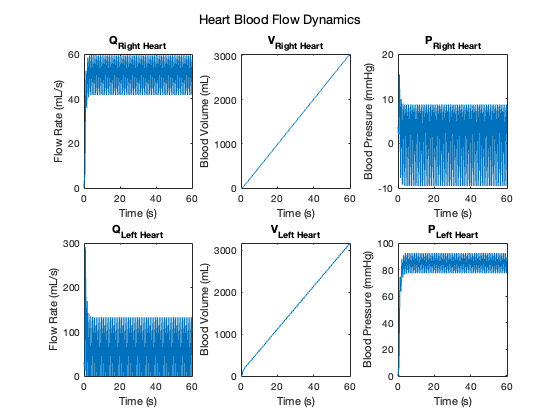
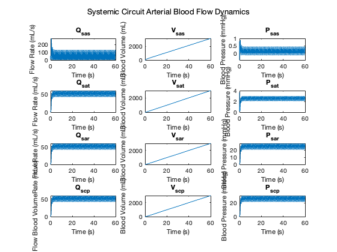
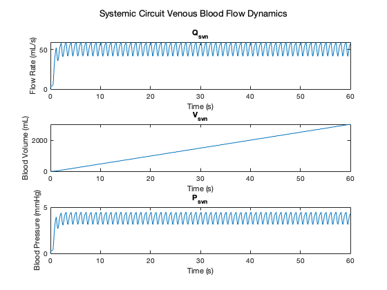
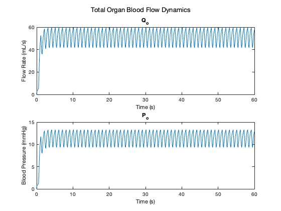
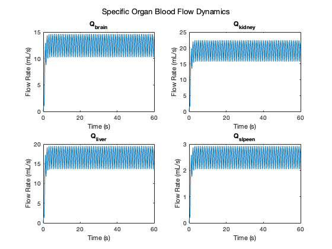
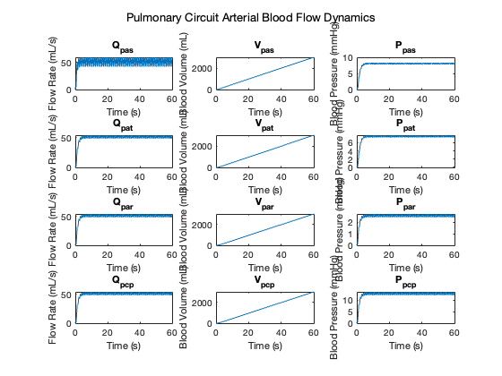
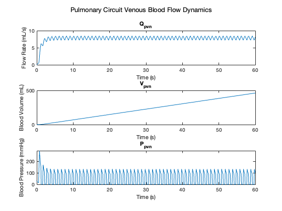

v1l = '10';
v2l = '120';
tdl = '0.5';
tfl = '0.15';
trl = '0.25';
pwl = '0.4';
perl = '1';
v1r = '4';
v2r = '25';
tdr = '0.5';
tfr = '0.15';
trr = '0.25';
pwr = '0.4';
perr = '1';
C_sas = '0.08';
L_sas = '0.000062';
R_sas = '0.003';
L_sat = '0.0017';
C_sat = '1.6';
R_sat = '0.05';
R_sar = '0.5';
R_scp = '0.52';
R_brain = '0.908336';
R_liver = '0.681252';
R_spleen = '4.54168';
R_kidney = '0.592393';
R_svn = '0.075';
C_pas = '0.18';
R_pas = '0.002';
L_pas = '0.000052';
C_pat = '3.8';
R_pat = '0.01';
L_pat = '0.0017';
R_par = '0.05';
R_pcp = '0.25';
C_pvn = '20.5';
R_pvn = '0.006';
duration = '60';
[time, Q_right_heart, Q_left_heart, V_left_heart,...
V_right_heart, P_right_heart, P_left_heart, Q_sas, Q_sat,...
Q_sar, Q_scp, V_sas, V_sat, V_sar, V_scp, P_sas, P_sat,...
P_sar, P_scp, Q_svn, V_svn, P_svn, Q_organs, V_organs,...
P_organs, Q_brain, Q_kidney, Q_spleen, Q_liver, V_brain,...
V_kidney, V_spleen, V_liver, Q_pas, Q_pat, Q_par, Q_pcp,...
V_pas, V_pat, V_par, V_pcp, P_pas, P_pat, P_par, P_pcp,...
Q_pvn, V_pvn, P_pvn] = simulinkSimulator(...
v1l, v2l, tdl, tfl, trl, pwl, perl, v1r, v2r, tdr,...
tfr, trr, pwr, perr, C_sas, L_sas, R_sas, L_sat,...
C_sat, R_sat, R_sar, R_scp, R_brain, R_liver,...
R_spleen, R_kidney, R_svn, C_pas,...
R_pas, L_pas, C_pat, R_pat, L_pat, R_par, R_pcp,...
C_pvn, R_pvn, duration);
save('time.mat','time','-mat')
save('Q_left_heart.mat','Q_left_heart','-mat')
save('Q_right_heart.mat','Q_right_heart','-mat')
save('Q_sas.mat','Q_sas','-mat')
save('Q_sat.mat','Q_sat','-mat')
save('Q_sar.mat','Q_sar','-mat')
save('Q_scp.mat','Q_scp','-mat')
save('Q_svn.mat','Q_svn','-mat')
save('Q_organs.mat','Q_organs','-mat')
save('Q_brain.mat','Q_brain','-mat')
save('Q_kidney.mat','Q_kidney','-mat')
save('Q_liver.mat','Q_liver','-mat')
save('Q_spleen.mat','Q_spleen','-mat')
save('Q_pas.mat','Q_pas','-mat')
save('Q_pat.mat','Q_pat','-mat')
save('Q_par.mat','Q_par','-mat')
save('Q_pcp.mat','Q_pcp','-mat')
save('Q_pvn.mat','Q_pvn','-mat')
plot_signals(time, Q_right_heart, Q_left_heart, V_left_heart,...
V_right_heart, P_right_heart, P_left_heart, Q_sas, Q_sat,...
Q_sar, Q_scp, V_sas, V_sat, V_sar, V_scp, P_sas, P_sat,...
P_sar, P_scp, Q_svn, V_svn, P_svn, Q_organs, V_organs,...
P_organs, Q_brain, Q_kidney, Q_spleen, Q_liver, V_brain,...
V_kidney, V_spleen, V_liver, Q_pas, Q_pat, Q_par, Q_pcp,...
V_pas, V_pat, V_par, V_pcp, P_pas, P_pat, P_par, P_pcp,...
Q_pvn, V_pvn, P_pvn);
true_brain = 750;
true_lungs = 600;
true_heart = 6000;
true_kidneys = 1100;
true_liver = 1000;
true_spleen = 150;
fprintf("Cardiac Output: %0.3f mL\nKidney Volume: %0.3f mL\nSpleen Volume: %0.3f mL\nLiver Volume: %0.3f mL\nBrain Volume: %0.3f mL\n\n",...
[(V_left_heart(length(V_left_heart)) + V_right_heart(length(V_right_heart))), V_kidney, V_spleen, V_liver, V_brain]);
calc_heart = V_left_heart(length(V_left_heart)) + V_right_heart(length(V_right_heart));
calc_lung = calc_heart * 0.1;
acc_heart = 100 - abs((true_heart - calc_heart) / true_heart) * 100;
acc_lungs = 100 - abs((true_lungs - calc_lung) / true_lungs) * 100;
acc_brain = 100 - abs((true_brain - V_brain) / true_brain) * 100;
acc_kidney = 100 - abs((true_kidneys - V_kidney) / true_kidneys) * 100;
acc_liver = 100 - abs((true_liver - V_liver) / true_liver) * 100;
acc_spleen = 100 - abs((true_spleen - V_spleen) / true_spleen) * 100;
accs = [acc_heart acc_lungs acc_brain acc_kidney acc_liver acc_spleen];
avg_acc = mean(accs);
fprintf("Cardiac Output Accuracy: %0.3f%%\nLung Accuracy: %0.3f%%\nBrain Accuracy: %0.3f%%\nKidney Accuracy: %0.3f%%\nLiver Accuracy: %0.3f%%\nSpleen Accuracy: %0.3f%%\n\n",...
accs);
fprintf("Average Accuracy: %0.3f%%\n\n",avg_acc);
function [time, Q_right_heart, Q_left_heart, V_left_heart,...
V_right_heart, P_right_heart, P_left_heart, Q_sas, Q_sat,...
Q_sar, Q_scp, V_sas, V_sat, V_sar, V_scp, P_sas, P_sat,...
P_sar, P_scp, Q_svn, V_svn, P_svn, Q_organs, V_organs,...
P_organs, Q_brain, Q_kidney, Q_spleen, Q_liver, V_brain,...
V_kidney, V_spleen, V_liver, Q_pas, Q_pat, Q_par, Q_pcp,...
V_pas, V_pat, V_par, V_pcp, P_pas, P_pat, P_par, P_pcp,...
Q_pvn, V_pvn, P_pvn] = simulinkSimulator(v1l,...
v2l, tdl, tfl, trl, pwl, perl, v1r, v2r, tdr,...
tfr, trr, pwr, perr, C_sas, L_sas, R_sas, L_sat,...
C_sat, R_sat, R_sar, R_scp, R_brain, R_liver,...
R_spleen, R_kidney, R_svn, C_pas,...
R_pas, L_pas, C_pat, R_pat, L_pat, R_par, R_pcp,...
C_pvn, R_pvn, duration)
set_param('CirculationCircuitv2021_v3/R_scp', 'R', R_scp);
set_param('CirculationCircuitv2021_v3/R_sas', 'R', R_sas);
set_param('CirculationCircuitv2021_v3/R_sat', 'R', R_sat);
set_param('CirculationCircuitv2021_v3/R_sar', 'R', R_sar);
set_param('CirculationCircuitv2021_v3/R_brain', 'R', R_brain);
set_param('CirculationCircuitv2021_v3/R_kidney', 'R', R_kidney);
set_param('CirculationCircuitv2021_v3/R_spleen', 'R', R_spleen);
set_param('CirculationCircuitv2021_v3/R_liver', 'R', R_liver);
set_param('CirculationCircuitv2021_v3/R_svn', 'R', R_svn);
set_param('CirculationCircuitv2021_v3/R_pas', 'R', R_pas);
set_param('CirculationCircuitv2021_v3/R_pat', 'R', R_pat);
set_param('CirculationCircuitv2021_v3/R_par', 'R', R_par);
set_param('CirculationCircuitv2021_v3/R_pcp', 'R', R_pcp);
set_param('CirculationCircuitv2021_v3/R_pvn', 'R', R_pvn);
set_param('CirculationCircuitv2021_v3/C_sas', 'c', C_sas);
set_param('CirculationCircuitv2021_v3/C_sat', 'c', C_sat);
set_param('CirculationCircuitv2021_v3/C_sas', 'c', C_sas);
set_param('CirculationCircuitv2021_v3/C_pas', 'c', C_pas);
set_param('CirculationCircuitv2021_v3/C_pat', 'c', C_pat);
set_param('CirculationCircuitv2021_v3/C_pvn', 'c', C_pvn);
set_param('CirculationCircuitv2021_v3/L_sas', 'l', L_sas);
set_param('CirculationCircuitv2021_v3/L_pas', 'l', L_pas);
set_param('CirculationCircuitv2021_v3/L_sat', 'l', L_sat);
set_param('CirculationCircuitv2021_v3/L_pat', 'l', L_pat);
set_param('CirculationCircuitv2021_v3/Heart_L', 'V1', v1l);
set_param('CirculationCircuitv2021_v3/Heart_L', 'V2', v2l);
set_param('CirculationCircuitv2021_v3/Heart_L', 'TD', tdl);
set_param('CirculationCircuitv2021_v3/Heart_L', 'TF', tfl);
set_param('CirculationCircuitv2021_v3/Heart_L', 'TR', trl);
set_param('CirculationCircuitv2021_v3/Heart_L', 'pW', pwl);
set_param('CirculationCircuitv2021_v3/Heart_L', 'PER', perl);
set_param('CirculationCircuitv2021_v3/Heart_R', 'V1', v1r);
set_param('CirculationCircuitv2021_v3/Heart_R', 'V2', v2r);
set_param('CirculationCircuitv2021_v3/Heart_R', 'TD', tdr);
set_param('CirculationCircuitv2021_v3/Heart_R', 'TF', tfr);
set_param('CirculationCircuitv2021_v3/Heart_R', 'TF', trr);
set_param('CirculationCircuitv2021_v3/Heart_R', 'pW', pwr);
set_param('CirculationCircuitv2021_v3/Heart_R', 'PER', perr);
simOut=sim('CirculationCircuitv2021_v3', 'StartTime','0','StopTime',duration,...
'FixedStep','0.0001');
Q_right_heart = simOut.Q_right_heart.signals.values;
time = simOut.Q_right_heart.time;
Q_left_heart = simOut.Q_left_heart.signals.values;
V_left_heart = simOut.V_left_heart.signals.values;
V_right_heart = simOut.V_right_heart.signals.values;
P_right_heart = simOut.P_right_heart.signals.values;
P_left_heart = simOut.P_left_heart.signals.values;
Q_sas = simOut.Q_sas.signals.values;
Q_sat = simOut.Q_sat.signals.values;
Q_sar = simOut.Q_sar.signals.values;
Q_scp = simOut.Q_scp.signals.values;
V_sas = simOut.V_sas.signals.values;
V_sat = simOut.V_sat.signals.values;
V_sar = simOut.V_sar.signals.values;
V_scp = simOut.V_scp.signals.values;
P_sas = simOut.P_sas.signals.values;
P_sat = simOut.P_sat.signals.values;
P_sar = simOut.P_sar.signals.values;
P_scp = simOut.P_scp.signals.values;
Q_svn = simOut.Q_svn.signals.values;
V_svn = simOut.V_svn.signals.values;
P_svn = simOut.P_svn.signals.values;
P_organs = simOut.P_organs.signals.values;
Req = 1/((1/str2double(R_liver)) + (1/str2double(R_spleen)) + ...
(1/str2double(R_kidney)) + (1/str2double(R_brain)));
Q_brain = P_organs ./ str2double(R_brain);
Q_kidney = P_organs ./ str2double(R_kidney);
Q_spleen = P_organs ./ str2double(R_spleen);
Q_liver = P_organs ./ str2double(R_liver);
Q_organs = P_organs ./ Req;
V_brain = mean(Q_brain)*str2double(duration);
V_kidney = mean(Q_kidney)*str2double(duration);
V_spleen = mean(Q_spleen)*str2double(duration);
V_liver = mean(Q_liver)*str2double(duration);
V_organs = mean(Q_organs)*str2double(duration);
Q_pas = simOut.Q_pas.signals.values;
Q_pat = simOut.Q_pat.signals.values;
Q_par = simOut.Q_par.signals.values;
Q_pcp = simOut.Q_pcp.signals.values;
V_pas = simOut.V_pas.signals.values;
V_pat = simOut.V_pat.signals.values;
V_par = simOut.V_par.signals.values;
V_pcp = simOut.V_pcp.signals.values;
P_pas = simOut.P_pas.signals.values;
P_pat = simOut.P_pat.signals.values;
P_par = simOut.P_par.signals.values;
P_pcp = simOut.P_pcp.signals.values;
Q_pvn = simOut.Q_pvn.signals.values;
V_pvn = simOut.V_pvn.signals.values;
P_pvn = simOut.P_pvn.signals.values;
end
function plot_signals(time, Q_right_heart, Q_left_heart, V_left_heart,...
V_right_heart, P_right_heart, P_left_heart, Q_sas, Q_sat,...
Q_sar, Q_scp, V_sas, V_sat, V_sar, V_scp, P_sas, P_sat,...
P_sar, P_scp, Q_svn, V_svn, P_svn, Q_organs, V_organs,...
P_organs, Q_brain, Q_kidney, Q_spleen, Q_liver, V_brain,...
V_kidney, V_spleen, V_liver, Q_pas, Q_pat, Q_par, Q_pcp,...
V_pas, V_pat, V_par, V_pcp, P_pas, P_pat, P_par, P_pcp,...
Q_pvn, V_pvn, P_pvn)
figure
subplot(2,3,1)
plot(time,Q_right_heart);
title('Q_{Right Heart}');
xlabel('Time (s)');
ylabel('Flow Rate (mL/s)');
subplot(2,3,4)
plot(time,Q_left_heart);
title('Q_{Left Heart}');
xlabel('Time (s)');
ylabel('Flow Rate (mL/s)');
subplot(2,3,2)
plot(time,V_right_heart);
title('V_{Right Heart}');
xlabel('Time (s)');
ylabel('Blood Volume (mL)');
subplot(2,3,5)
plot(time,V_left_heart);
title('V_{Left Heart}');
xlabel('Time (s)');
ylabel('Blood Volume (mL)');
subplot(2,3,6)
plot(time,P_left_heart);
title('P_{Left Heart}');
xlabel('Time (s)');
ylabel('Blood Pressure (mmHg)');
subplot(2,3,3)
plot(time,P_right_heart);
title('P_{Right Heart}');
xlabel('Time (s)');
ylabel('Blood Pressure (mmHg)');
sgtitle('Heart Blood Flow Dynamics');
saveas(gcf, 'Heart Blood Flow Dynamics.png');
figure
subplot(4,3,1)
plot(time, Q_sas);
title('Q_{sas}');
xlabel('Time (s)');
ylabel('Flow Rate (mL/s)');
subplot(4,3,4)
plot(time, Q_sat);
title('Q_{sat}');
xlabel('Time (s)');
ylabel('Flow Rate (mL/s)');
subplot(4,3,7)
plot(time, Q_sar);
title('Q_{sar}');
xlabel('Time (s)');
ylabel('Flow Rate (mL/s)');
subplot(4,3,10)
plot(time, Q_scp);
title('Q_{scp}');
xlabel('Time (s)');
ylabel('Flow Blood VolumeRate (mL/s)');
subplot(4,3,2)
plot(time, V_sas);
title('V_{sas}');
xlabel('Time (s)');
ylabel('Blood Volume (mL)');
subplot(4,3,5)
plot(time, V_sat);
title('V_{sat}');
xlabel('Time (s)');
ylabel('Blood Volume (mL)');
subplot(4,3,8)
plot(time, V_sar);
title('V_{sar}');
xlabel('Time (s)');
ylabel('Blood Volume (mL)');
subplot(4,3,11)
plot(time, V_scp);
title('V_{scp}');
xlabel('Time (s)');
ylabel('Blood Volume (mL)');
subplot(4,3,3)
plot(time,P_sas);
title('P_{sas}');
xlabel('Time (s)');
ylabel('Blood Pressure (mmHg)');
subplot(4,3,6)
plot(time,P_sat);
title('P_{sat}');
xlabel('Time (s)');
ylabel('Blood Pressure (mmHg)');
subplot(4,3,9)
plot(time,P_sar);
title('P_{sar}');
xlabel('Time (s)');
ylabel('Blood Pressure (mmHg)');
subplot(4,3,12)
plot(time,P_scp);
title('P_{scp}');
xlabel('Time (s)');
ylabel('Blood Pressure (mmHg)');
sgtitle('Systemic Circuit Arterial Blood Flow Dynamics');
saveas(gcf, 'Systemic Circuit Arterial Blood Flow Dynamics.png');
figure
subplot(3,1,1)
plot(time, Q_svn);
title('Q_{svn}');
xlabel('Time (s)');
ylabel('Flow Rate (mL/s)');
subplot(3,1,2)
plot(time, V_svn);
title('V_{svn}');
xlabel('Time (s)');
ylabel('Blood Volume (mL)');
subplot(3,1,3)
plot(time, P_svn);
title('P_{svn}');
xlabel('Time (s)');
ylabel('Blood Pressure (mmHg)');
sgtitle("Systemic Circuit Venous Blood Flow Dynamics");
saveas(gcf, "Systemic Circuit Venous Blood Flow Dynamics.png");
figure
subplot(2,1,1)
plot(time,Q_organs);
title('Q_o');
xlabel('Time (s)');
ylabel('Flow Rate (mL/s)');
subplot(2,1,2)
plot(time, P_organs);
title('P_{o}');
xlabel('Time (s)');
ylabel('Blood Pressure (mmHg)');
sgtitle("Total Organ Blood Flow Dynamics");
saveas(gcf, "Total Organ Blood Flow Dynamics.png");
figure
subplot(2,2,1)
plot(time, Q_brain);
title('Q_{brain}');
xlabel('Time (s)');
ylabel('Flow Rate (mL/s)');
subplot(2,2,2)
plot(time, Q_kidney);
title('Q_{kidney}');
xlabel('Time (s)');
ylabel('Flow Rate (mL/s)');
subplot(2,2,3)
plot(time, Q_liver);
title('Q_{liver}');
xlabel('Time (s)');
ylabel('Flow Rate (mL/s)');
subplot(2,2,4)
plot(time, Q_spleen);
title('Q_{slpeen}');
xlabel('Time (s)');
ylabel('Flow Rate (mL/s)');
sgtitle("Specific Organ Blood Flow Dynamics");
saveas(gcf, "Specific Organ Blood Flow Dynamics.png");
figure
subplot(4,3,1)
plot(time, Q_pas);
title('Q_{pas}');
xlabel('Time (s)');
ylabel('Flow Rate (mL/s)');
subplot(4,3,2)
plot(time, V_pas);
title('V_{pas}');
xlabel('Time (s)');
ylabel('Blood Volume (mL)');
subplot(4,3,3)
plot(time, P_pas);
title('P_{pas}');
xlabel('Time (s)');
ylabel('Blood Pressure (mmHg)');
subplot(4,3,4)
plot(time, Q_pat);
title('Q_{pat}');
xlabel('Time (s)');
ylabel('Flow Rate (mL/s)');
subplot(4,3,5)
plot(time, V_pat);
title('V_{pat}');
xlabel('Time (s)');
ylabel('Blood Volume (mL)');
subplot(4,3,6)
plot(time, P_pat);
title('P_{pat}');
xlabel('Time (s)');
ylabel('Blood Pressure (mmHg)');
subplot(4,3,7)
plot(time, Q_par);
title('Q_{par}');
xlabel('Time (s)');
ylabel('Flow Rate (mL/s)');
subplot(4,3,8)
plot(time, V_par);
title('V_{par}');
xlabel('Time (s)');
ylabel('Blood Volume (mL)');
subplot(4,3,9)
plot(time, P_par);
title('P_{par}');
xlabel('Time (s)');
ylabel('Blood Pressure (mmHg)');
subplot(4,3,10)
plot(time, Q_pcp);
title('Q_{pcp}');
xlabel('Time (s)');
ylabel('Flow Rate (mL/s)');
subplot(4,3,11)
plot(time, V_pcp);
title('V_{pcp}');
xlabel('Time (s)');
ylabel('Blood Volume (mL)');
subplot(4,3,12)
plot(time, P_pcp);
title('P_{pcp}');
xlabel('Time (s)');
ylabel('Blood Pressure (mmHg)');
sgtitle('Pulmonary Circuit Arterial Blood Flow Dynamics');
saveas(gcf, 'Pulmonary Circuit Arterial Blood Flow Dynamics.png');
figure
subplot(3,1,1)
plot(time, Q_pvn);
title('Q_{pvn}');
xlabel('Time (s)');
ylabel('Flow Rate (mL/s)');
subplot(3,1,2)
plot(time, V_pvn);
title('V_{pvn}');
xlabel('Time (s)');
ylabel('Blood Volume (mL)');
subplot(3,1,3)
plot(time, P_pvn);
title('P_{pvn}');
xlabel('Time (s)');
ylabel('Blood Pressure (mmHg)');
sgtitle("Pulmonary Circuit Venous Blood Flow Dynamics");
saveas(gcf, "Pulmonary Circuit Venous Blood Flow Dynamics.png");
end
Cardiac Output: 6205.810 mL
Kidney Volume: 1144.595 mL
Spleen Volume: 149.295 mL
Liver Volume: 995.300 mL
Brain Volume: 746.475 mL
Cardiac Output Accuracy: 96.570%
Lung Accuracy: 96.570%
Brain Accuracy: 99.530%
Kidney Accuracy: 95.946%
Liver Accuracy: 99.530%
Spleen Accuracy: 99.530%
Average Accuracy: 97.946%
      